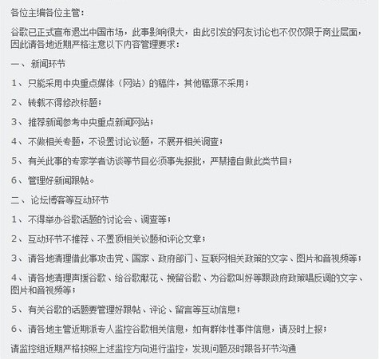

上周五刚听小道消息说：谷歌要撤，结果本周一晚上就应验了（看来小道消息还是蛮准的，不服不行啊！）。于是，本周的互联网异常热闹，各种口水都围着 Google 打转。俺观望了好几天，忍不住也来凑个数。今天聊的话题是：对于 Google 的退出，党国是如何操纵舆论的？
其实俺在之前的帖子《党和互联网的较量》中，已经提及了中宣部对于党国的重要性。为了让大伙儿感觉更形象，找来如下一幅图：
从图中可以清楚看出，中宣部就是大陆所有传媒的神经中枢。（顺便插一句，中宣部不光控制传媒，还掌控教育、影视、出版等多个领域）
想必1月初 Google 刚发布声明（墙外链接）的时候，中宣部就开始构思 Google 的罪名了。正所谓“名不正则言不顺”，咱们党国做事当然也要讲究“师出有名”。经过俺滴观察，针对 Google 的罪名大致有如下几种：
所谓的动机不纯（不高尚），主要是指 Google 退出中国的动机，不是因为他号称的“不作恶”，“不愿意配合政府审查敏感内容”，而是另有原因。
在这里，抹黑的人主要抓住 Google 的两个小辫子：
其一，市场占有率不够大。
根据这个理由，认定 Google 退出是因为在中国混得不好（市场占有率只有1/3，远低于百度）。当然啦，懂行的IT人士会看出此理由明显站不住脚。
其二，在退出的事情上不够果断迅速。
根据这条，认定 Google 之所以“欲退还休，欲罢不能”，是为了炒作自己、赚取眼球、提高知名度。
通过这个较轻的罪名，先迷惑一些“不明真相的群众”，尤其是不在 IT 圈内混的群众。让大伙儿开始怀疑 Google 的动机，进而怀疑 Google 的人品。
有了前一个罪名铺垫，紧接着就开始扣上一个较大的帽子——传播黄色淫秽信息。你 Google 不是口口声声说：“不愿意和政府合作，不愿意过滤敏感信息吗”？那么，党国的喉舌就有意把“敏感信息”歪曲为“色情信息”。控诉说，Google 有多么多么坏，就是不愿同政府合作，不愿过滤黄色信息。结果捏，导致现在国内的互联网上色情泛滥。
这个罪名主要是用来点燃中老年同志的怒火——因为这些人大都有处于未成年阶段的儿孙。因此对网上流传的色情信息特别反感。
通过这个罪名，中老年群众和女性的青少年群众，就开始对 Google 心生反感了。
经过了前两个罪名的渲染，最后再亮出 Google 的终极罪名——美国政府的打手，中国人民的敌人。
这个上纲上线的罪名，其推理的过程，大致如下：
1、Google 高管和美国政府高官往来密切
2、Google 决定退出之前，和白宫打过招呼
3、Google 宣布退出后，希拉里立马发表了“互联网自由”演说，给 Google 撑腰
4、最近中美有些摩擦（比如人民币汇率），美国想利用 Google 向中国施压
5、美国政府借助 Google 进行思想输出、文化渗透、价值观渗透
通过这种论点，首先可以调动许多愤青的爱国热情，进而把这种热情转化为对 Google 的痛恨。
给 Google 定罪之后，接下来就要让广大的人民群众了解这些罪名。
作为国家机器的主宰，党控制了很多有影响力的资源。在这波舆论攻势中，它们以开路先锋的面目出现，向国内的草民灌输 Google 的上述罪名。
得益于电视的普及，CCTV 成为党国最大的喉舌。去年对谷歌“色情门”的控诉，就是从焦点访谈栏目开始（因此，CCTV 被戏称是 CCAV）。
这次，由于 Google 的公告在周一晚间发布。因此，CCAV 在次日晚上就开足马力，开始痛批 Google 公司。据网友反映，那晚央视有好几套节目都开设了专栏，把矛头直指Google。本来俺已很少看电视了，那天在网上得到消息之后，赶紧去围观了一下。竟然有幸在 CCAV 4套的某个访谈，看到了臭名昭著的方滨兴（墙外介绍看“这里”和“这里”）在大言不惭地批评谷歌。
考虑到 CCTV 的收视率，那几套节目应该能覆盖到不少国内的老百姓。被其忽悠的，大有人在。
新华社相当于中国的国家通讯社。想当年，天朝太祖毛腊肉给新华社定的调子是：
因此，每当国内外发生重大的敏感事件，新华社都会发布“新华社通稿”。这个“通稿”会成为国内所有传媒进行报道的一个参考标准。如果哪个传媒胆敢越过雷池一步，发出不同的声音，那它的总编和责任编辑多半会遭到免职。
这两个网站，是党国直接控制的互联网阵地。通常他们会紧跟新华社的步调，在第一时间发布相应的评论性文章。然后这些评论文章，会作为模板，被几大国内网站一字不差地转发。（后面会说到这点）
所谓的杂牌军，包括各种大型门户网站、国内各大论坛、各种报刊杂志。显然他们的影响力不如国字号、央字号的单位，但是利用得好，也能忽悠不少网民。
所以，中宣部在谷歌正式宣布退出后，给这些杂牌军下发了通知，见下图。

“中宣部的通知”要求：各大传媒对于谷歌退出事件的报道，要遵守如下几条：
1、只能采用中央重点媒体（网站）的稿件，其他稿源不采用；
2、转载不得修改标题；
3、推荐新闻参考中央重点新闻网站
为了验证一下，俺分别到 Google 和 Baidu 上搜索如下标题
可以找到如下的一些网页：
首先是党国的官方网站
新华网：http://news.xinhuanet.com/world/2010-03/20/content_13209582.htm
人民网：http://politics.people.com.cn/GB/1026/11183330.html
然后是三大门户
新浪：http://news.sina.com.cn/c/2010-03-20/114219905303.shtml
网易：http://news.163.com/10/0320/13/627LE22Q0001124J.html
搜狐：http://it.sohu.com/20100320/n270968452.shtml
还有其它一些网站
凤凰网：http://news.ifeng.com/opinion/201003/0320_23_1581666.shtml
腾讯网：http://finance.qq.com/a/20100319/007157.htm
...... 还有很多，就不再一一列举了。
从上述这些页面可以看出，国内的网站完全和裆中央的步调保持一致。所有的文章的内容（尤其是标题）一字不差——令俺佩服啊！
如果你再仔细观察一下那些URL地址，可以看出，这些网页，几乎都是在3月20日统一发布的——连时间上也保持步调一致，俺真是佩服得五体投地啊！
所以，国内的那些大网站，几乎都成了中宣部的传声筒。中宣部利用它们进行造势，给网民们造成一种错觉。让大家误以为Google成了过街老鼠，人人喊打。
历史学得好的同学，应该知道第五纵队的典故（具体解释参见“这里”）。其实党国在操纵舆论方面，也存在类似“第五纵队”这样的角色——那就是 GFW 和五毛党。为啥俺要把这两个东西比喻为第五纵队捏，因为他们干的都是背地里的勾当，见不得光。且党国也一直不愿承认有这两样东西的存在。
关于 GFW 本身，俺已经说得够多的了（参见“翻墙扫盲教程”），此处不再啰嗦。
在这次事件中，国内还是有不少头脑清醒的网民，能够识破党国的伎俩。有些人也会写点文章，为Google鸣不平。这时候，GFW 就开始起作用了。它会把一些影响力比较大的文章甚至网站屏蔽掉，让不懂翻墙的老百姓无法看到。
典型的例子就是：知名博客“可能吧”在3月23日发表了一篇声援 Google 的评论（在“这里”），当天整个网站即遭到屏蔽。（看来 GFW 办事效率蛮高的嘛）
五毛党长期战斗在各种网络论坛的第一线，身披各色马甲，为党歌功颂德。在这次谷歌事件中，五毛们主要是通过谩骂 Google 来混淆视听。目的是让不明真相的群众以为，Google 在国内很不得人心。
说到“五毛党的忽悠”，大伙儿可以参考俺的另几篇博文：
《扫盲逻辑谬误——以五毛言论为反面教材》
《五毛谬论点评——“每个国家都有审查制度”》
写了这么多，无非是希望列位看官能够明白，国内的舆论经常是被党操纵的。大伙儿对此要有清醒的认识，别让党给耍了。如果你希望看到更加真实的新闻，请翻墙去看海外的网站。如果你对海外的新闻网站不太了解，可以参考俺整理的“海外新闻网站汇总”。
俺博客上，和本文相关的帖子（需翻墙）：
党和互联网的较量
每周转载：关于“Gmail 彻底被墙”的网友评论
扫盲逻辑谬误——以五毛言论为反面教材
五毛谬论点评——“每个国家都有审查制度”
各种迹象显示——党国喉舌正逐渐失去舆论阵地
★中宣部的前期准备工作——【罗织罪名】
其实俺在之前的帖子《党和互联网的较量》中，已经提及了中宣部对于党国的重要性。为了让大伙儿感觉更形象，找来如下一幅图：
从图中可以清楚看出，中宣部就是大陆所有传媒的神经中枢。（顺便插一句，中宣部不光控制传媒，还掌控教育、影视、出版等多个领域）
想必1月初 Google 刚发布声明（墙外链接）的时候，中宣部就开始构思 Google 的罪名了。正所谓“名不正则言不顺”，咱们党国做事当然也要讲究“师出有名”。经过俺滴观察，针对 Google 的罪名大致有如下几种：
◇动机不纯论
所谓的动机不纯（不高尚），主要是指 Google 退出中国的动机，不是因为他号称的“不作恶”，“不愿意配合政府审查敏感内容”，而是另有原因。
在这里，抹黑的人主要抓住 Google 的两个小辫子：
其一，市场占有率不够大。
根据这个理由，认定 Google 退出是因为在中国混得不好（市场占有率只有1/3，远低于百度）。当然啦，懂行的IT人士会看出此理由明显站不住脚。
其二，在退出的事情上不够果断迅速。
根据这条，认定 Google 之所以“欲退还休，欲罢不能”，是为了炒作自己、赚取眼球、提高知名度。
通过这个较轻的罪名，先迷惑一些“不明真相的群众”，尤其是不在 IT 圈内混的群众。让大伙儿开始怀疑 Google 的动机，进而怀疑 Google 的人品。
◇传播色情论
有了前一个罪名铺垫，紧接着就开始扣上一个较大的帽子——传播黄色淫秽信息。你 Google 不是口口声声说：“不愿意和政府合作，不愿意过滤敏感信息吗”？那么，党国的喉舌就有意把“敏感信息”歪曲为“色情信息”。控诉说，Google 有多么多么坏，就是不愿同政府合作，不愿过滤黄色信息。结果捏，导致现在国内的互联网上色情泛滥。
这个罪名主要是用来点燃中老年同志的怒火——因为这些人大都有处于未成年阶段的儿孙。因此对网上流传的色情信息特别反感。
通过这个罪名，中老年群众和女性的青少年群众，就开始对 Google 心生反感了。
◇政治阴谋论
经过了前两个罪名的渲染，最后再亮出 Google 的终极罪名——美国政府的打手，中国人民的敌人。
这个上纲上线的罪名，其推理的过程，大致如下：
1、Google 高管和美国政府高官往来密切
2、Google 决定退出之前，和白宫打过招呼
3、Google 宣布退出后，希拉里立马发表了“互联网自由”演说，给 Google 撑腰
4、最近中美有些摩擦（比如人民币汇率），美国想利用 Google 向中国施压
5、美国政府借助 Google 进行思想输出、文化渗透、价值观渗透
通过这种论点，首先可以调动许多愤青的爱国热情，进而把这种热情转化为对 Google 的痛恨。
★担任主攻的【正规军】
给 Google 定罪之后，接下来就要让广大的人民群众了解这些罪名。
作为国家机器的主宰，党控制了很多有影响力的资源。在这波舆论攻势中，它们以开路先锋的面目出现，向国内的草民灌输 Google 的上述罪名。
◇CCTV
得益于电视的普及，CCTV 成为党国最大的喉舌。去年对谷歌“色情门”的控诉，就是从焦点访谈栏目开始（因此，CCTV 被戏称是 CCAV）。
这次，由于 Google 的公告在周一晚间发布。因此，CCAV 在次日晚上就开足马力，开始痛批 Google 公司。据网友反映，那晚央视有好几套节目都开设了专栏，把矛头直指Google。本来俺已很少看电视了，那天在网上得到消息之后，赶紧去围观了一下。竟然有幸在 CCAV 4套的某个访谈，看到了臭名昭著的方滨兴（墙外介绍看“这里”和“这里”）在大言不惭地批评谷歌。
考虑到 CCTV 的收视率，那几套节目应该能覆盖到不少国内的老百姓。被其忽悠的，大有人在。
◇新华社
新华社相当于中国的国家通讯社。想当年，天朝太祖毛腊肉给新华社定的调子是：
新华社要把地球都管起来，让全世界都能听到我们的声音。
因此，每当国内外发生重大的敏感事件，新华社都会发布“新华社通稿”。这个“通稿”会成为国内所有传媒进行报道的一个参考标准。如果哪个传媒胆敢越过雷池一步，发出不同的声音，那它的总编和责任编辑多半会遭到免职。
◇新华网/人民网
这两个网站，是党国直接控制的互联网阵地。通常他们会紧跟新华社的步调，在第一时间发布相应的评论性文章。然后这些评论文章，会作为模板，被几大国内网站一字不差地转发。（后面会说到这点）
★摇旗呐喊的【杂牌军】
所谓的杂牌军，包括各种大型门户网站、国内各大论坛、各种报刊杂志。显然他们的影响力不如国字号、央字号的单位，但是利用得好，也能忽悠不少网民。
所以，中宣部在谷歌正式宣布退出后，给这些杂牌军下发了通知，见下图。
“中宣部的通知”要求：各大传媒对于谷歌退出事件的报道，要遵守如下几条：
1、只能采用中央重点媒体（网站）的稿件，其他稿源不采用；
2、转载不得修改标题；
3、推荐新闻参考中央重点新闻网站
为了验证一下，俺分别到 Google 和 Baidu 上搜索如下标题
中国拒绝"政治的谷歌"与"谷歌的政治"
可以找到如下的一些网页：
首先是党国的官方网站
新华网：http://news.xinhuanet.com/world/2010-03/20/content_13209582.htm
人民网：http://politics.people.com.cn/GB/1026/11183330.html
然后是三大门户
新浪：http://news.sina.com.cn/c/2010-03-20/114219905303.shtml
网易：http://news.163.com/10/0320/13/627LE22Q0001124J.html
搜狐：http://it.sohu.com/20100320/n270968452.shtml
还有其它一些网站
凤凰网：http://news.ifeng.com/opinion/201003/0320_23_1581666.shtml
腾讯网：http://finance.qq.com/a/20100319/007157.htm
...... 还有很多，就不再一一列举了。
从上述这些页面可以看出，国内的网站完全和裆中央的步调保持一致。所有的文章的内容（尤其是标题）一字不差——令俺佩服啊！
如果你再仔细观察一下那些URL地址，可以看出，这些网页，几乎都是在3月20日统一发布的——连时间上也保持步调一致，俺真是佩服得五体投地啊！
所以，国内的那些大网站，几乎都成了中宣部的传声筒。中宣部利用它们进行造势，给网民们造成一种错觉。让大家误以为Google成了过街老鼠，人人喊打。
★专门搞破坏的【第五纵队】
历史学得好的同学，应该知道第五纵队的典故（具体解释参见“这里”）。其实党国在操纵舆论方面，也存在类似“第五纵队”这样的角色——那就是 GFW 和五毛党。为啥俺要把这两个东西比喻为第五纵队捏，因为他们干的都是背地里的勾当，见不得光。且党国也一直不愿承认有这两样东西的存在。
◇GFW
关于 GFW 本身，俺已经说得够多的了（参见“翻墙扫盲教程”），此处不再啰嗦。
在这次事件中，国内还是有不少头脑清醒的网民，能够识破党国的伎俩。有些人也会写点文章，为Google鸣不平。这时候，GFW 就开始起作用了。它会把一些影响力比较大的文章甚至网站屏蔽掉，让不懂翻墙的老百姓无法看到。
典型的例子就是：知名博客“可能吧”在3月23日发表了一篇声援 Google 的评论（在“这里”），当天整个网站即遭到屏蔽。（看来 GFW 办事效率蛮高的嘛）
◇五毛党
五毛党长期战斗在各种网络论坛的第一线，身披各色马甲，为党歌功颂德。在这次谷歌事件中，五毛们主要是通过谩骂 Google 来混淆视听。目的是让不明真相的群众以为，Google 在国内很不得人心。
说到“五毛党的忽悠”，大伙儿可以参考俺的另几篇博文：
《扫盲逻辑谬误——以五毛言论为反面教材》
《五毛谬论点评——“每个国家都有审查制度”》
★总结
写了这么多，无非是希望列位看官能够明白，国内的舆论经常是被党操纵的。大伙儿对此要有清醒的认识，别让党给耍了。如果你希望看到更加真实的新闻，请翻墙去看海外的网站。如果你对海外的新闻网站不太了解，可以参考俺整理的“海外新闻网站汇总”。
俺博客上，和本文相关的帖子（需翻墙）：
党和互联网的较量
每周转载：关于“Gmail 彻底被墙”的网友评论
扫盲逻辑谬误——以五毛言论为反面教材
五毛谬论点评——“每个国家都有审查制度”
各种迹象显示——党国喉舌正逐渐失去舆论阵地
版权声明
本博客所有的原创文章，作者皆保留版权。转载必须包含本声明，保持本文完整，并以超链接形式注明作者编程随想和本文原始地址：
https://program-think.blogspot.com/2010/03/party-control-news-media.html
本博客所有的原创文章，作者皆保留版权。转载必须包含本声明，保持本文完整，并以超链接形式注明作者编程随想和本文原始地址：
https://program-think.blogspot.com/2010/03/party-control-news-media.html